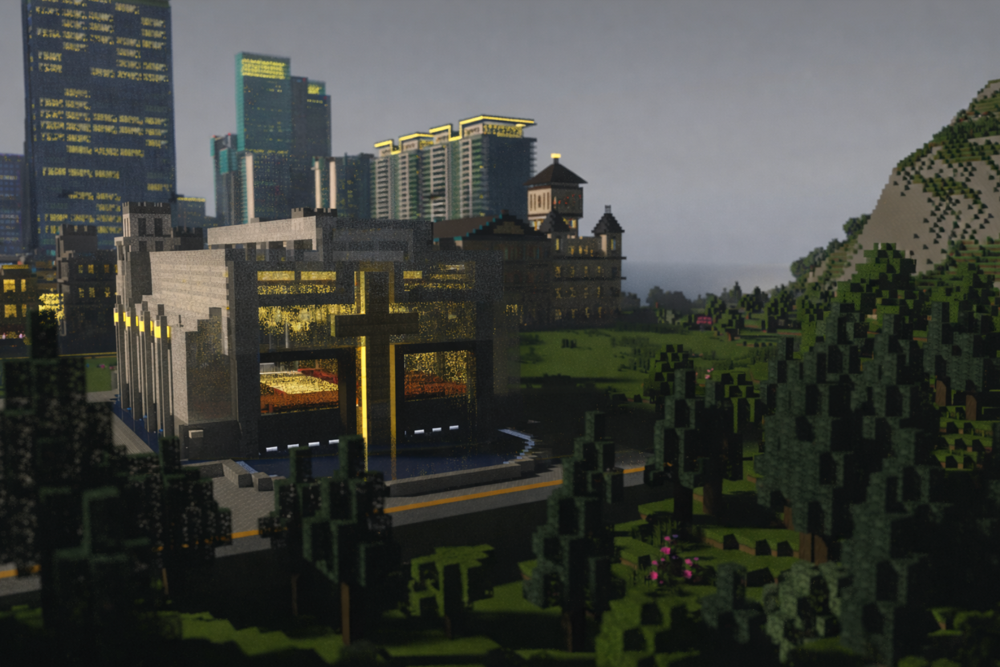

建造时间是2017-2021，共计四年时间。使用Minecraft游戏作为平台进行建模。图片采用chunky等渲染工具制作。
从海边拍摄城市天际线

从海岸上俯拍

岛上耸立的鹿雕像作为城市象征，参考纽约自由女神像

空中俯瞰的城市平面（AI修复）


欧式风情区，以独栋欧式建筑为主

参考了上海外滩和陆家嘴的对比关系

前面是商业综合体和办公酒店塔楼

重奢商场立面造景

建设工地场景

城市全景

城市天际线
The construction took place from 2017 to 2021, spanning a total of four years. Minecraft was used as the platform for modeling. The images were created using rendering tools such as Chunky.
Photographing the city skyline from the beach
Aerial view from the coast
The statue of a deer standing tall on the island serves as a symbol of the city, modeled after the Statue of Liberty in New York
Aerial view of the city layout (AI-restored)
European-style District, featuring primarily standalone European-style buildings
Drawing on the contrast between the Bund and Lujiazui in Shanghai
In front are a commercial complex and office-hotel towers
Landscaping for the facade of a luxury shopping mall
Construction Site
City Panorama
Skyline